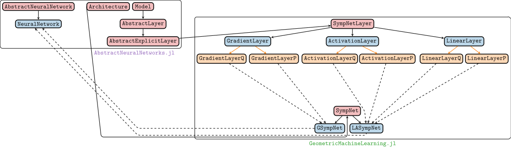
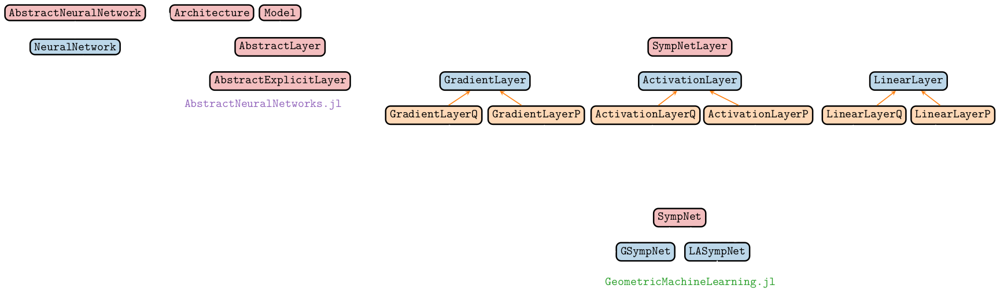

NeuralNetworks in GeometricMachineLearning
GeometricMachineLearning inherits some functionality from another Julia package called AbstractNeuralNetworks. How these two packages interact is shown in the figure below for the example of the SympNet[1]:
 
The red color indicates an abstract type, blue indicates a struct and orange indicates a const (derived from a struct). Solid black arrows indicate direct dependencies, i.e. we have
GradientLayer <: SympNetLayer <: AbstractExplicitLayer
GSympNet <: SympNet <: ArchitectureDashed black arrows indicate a derived neural network architecture. A GSympNet (which is an Architecture) is derived from GradientLayerQ and GradientLayerP (which are AbstractExplicitLayers) for example. An Architecture can be turned into a NeuralNetwork by calling the associated constructor
arch = GSympNet(3)
nn = NeuralNetwork(arch, CPU(), Float64)Such a neural network has four fields:
architecture: theArchitecturewe supplied the constructor with,model: a translation of the supplied architecture into specific neural network layers,params: the neural network parameters,backend: this indicates on which device we allocate the neural network parameters. In this case it isCPU().
We can get the associated model to GSympNet by calling:
nn.model.layers(GradientLayerQ{3, 3, typeof(tanh)}(6, tanh), GradientLayerP{3, 3, typeof(tanh)}(6, tanh))and we see that it consists of two layers: a GradientLayerQ and a GradientLayerP.
- 1The section on SympNets also contains an explanation of all the
structs andtypes described in this section here.